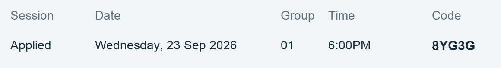
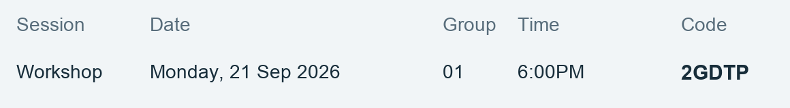
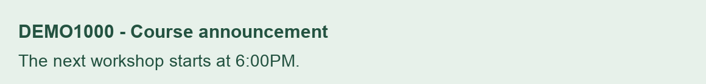
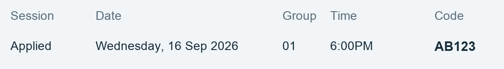

DEMO1000 · Collaborative learning
Week 4: From ideas to evidence
Explore, discuss and reflect
This week
Develop a shared approach to a small research question. Review the materials, compare your observations and bring your evidence to the workshop.
Learning objectives
- Frame a question that can be investigated.
- Compare evidence from different perspectives.
- Explain how feedback changes your next step.
Tasks and resources
- Review the weekly reading notes.
- Complete the group planning activity.
- Join a scheduled learning session.
01 Prepare
Connect this week's ideas with your previous work.
Before the workshop
Write down one question and two observations to share with your group. Consider which evidence would help you answer the question.
02 Participate
Work through the activities with your learning group.
Session materials
Review the session information and compare the group outcomes.



03 Reflect
Identify what changed and plan your next investigation.
Summarize one useful piece of feedback from this week.
Previous week's session reference
